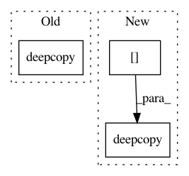

5b3af9ff43bc61f8034f1202a2b57f21c8ee3771,autokeras/graph.py,Graph,to_concat_skip_model,#Graph#Any#Any#,423
Before Change
for index, layer_id in enumerate(pooling_layer_list):
layer = self.layer_list[layer_id]
new_node_id = self._add_new_node()
self._add_edge(deepcopy(layer), skip_output_id, new_node_id)
skip_output_id = new_node_id
// Add the concatenate layer.
After Change
self.layer_list[end_id].filters, 1)
dropout_output_id = self.adj_list[dropout_input_id][0][0]
concat_input_node_id = self._add_node(deepcopy(self.node_list[dropout_output_id]))
self._redirect_edge(dropout_input_id, dropout_output_id, concat_input_node_id)
concat_layer = StubConcatenate()
In pattern: SUPERPATTERN
Frequency: 3
Non-data size: 3
Instances
Project Name: keras-team/autokeras
Commit Name: 5b3af9ff43bc61f8034f1202a2b57f21c8ee3771
Time: 2018-08-01
Author: jin@tamu.edu
File Name: autokeras/graph.py
Class Name: Graph
Method Name: to_concat_skip_model
Project Name: aleju/imgaug
Commit Name: bc87005e5dce729044e1a10286f9124d652e34d6
Time: 2019-08-25
Author: kontakt@ajung.name
File Name: imgaug/augmentables/kps.py
Class Name: Keypoint
Method Name: generate_similar_points_manhattan
Project Name: keras-team/autokeras
Commit Name: 5b3af9ff43bc61f8034f1202a2b57f21c8ee3771
Time: 2018-08-01
Author: jin@tamu.edu
File Name: autokeras/graph.py
Class Name: Graph
Method Name: to_add_skip_model